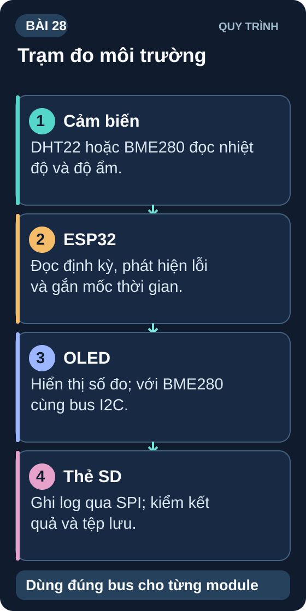
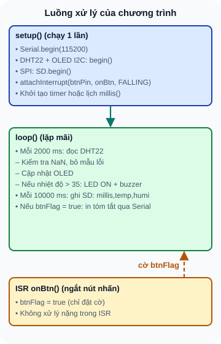
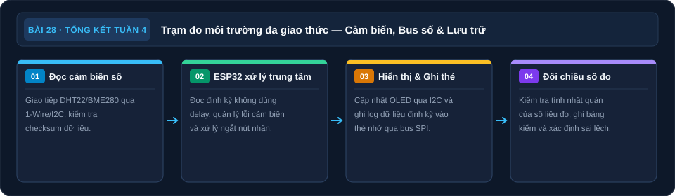

Ôn Tập Tuần 4 & Mini Project: Trạm Đo Môi Trường
Tổng hợp I2C, SPI, ADC, Interrupt — xây dựng trạm đo nhiệt độ/độ ẩm hiển thị OLED và ghi log SD card.

1. Ôn tập nhanh Tuần 4
| Câu hỏi | Đáp án |
|---|---|
| UART 115200 bps, 8N1. Thời gian truyền 1 byte? | 10 bit × (1/115200) = 86,8µs |
| I2C cần pull-up resistor vì lý do gì? | Kiến trúc open-drain: chỉ kéo xuống GND, cần R để kéo lên VCC |
| SPI Mode 0: SCK idle = ? Lấy mẫu cạnh nào? | SCK idle = LOW. Lấy mẫu tại cạnh lên (RISING) |
| Arduino Uno ADC 10-bit, V_REF=5V. analogRead()=800 → V=? | V = (800/1023) × 5V = 3,91V |
| ISR bắt buộc phải có gì trên biến chia sẻ? | volatile keyword |
| DHT22 đọc NaN — nguyên nhân đầu tiên cần kiểm tra? | Thiếu pull-up 10kΩ trên data line |
| DS18B20 ưu điểm so với DHT22 khi dùng nhiều điểm đo? | Nhiều sensor trên 1 dây 1-Wire, phân biệt bởi ROM 64-bit |
2. Mini Project Tuần 4: Trạm Đo Môi Trường
- Cảm biến: DHT22 (nhiệt độ + độ ẩm) hoặc BME280 I2C
- Hiển thị: OLED SSD1306 0,96" I2C — nhiệt độ, độ ẩm, thời gian chạy
- Log dữ liệu: SD card SPI — ghi mỗi 10 giây: timestamp,temp,humi
- Cảnh báo: LED đỏ + buzzer khi nhiệt độ > 35°C
- Nút nhấn: 1 nút (interrupt) để export summary qua Serial
- Nguồn dự kiến: USB 5 V → rail 3,3 V cho các tải tương thích; chỉ chọn AMS1117-3.3 sau khi cộng dòng đỉnh của ESP32/OLED/SD/cảm biến, kiểm dropout tại chân IN, tụ và nhiệt theo đúng part/PCB. Buzzer và module SD phải kiểm riêng điện áp, dòng và mạch chuyển mức; chưa có BOM/revision thì chỉ lập ngân sách nguồn.
2.1 Kiến trúc phần mềm

Đọc mô tả D28-1
Biến thể DHT22 của mã bên dưới: setup khởi tạo Serial, DHT22, OLED qua I2C, SD qua SPI và nút nhấn. loop đọc DHT22 mỗi 2000 ms, kiểm tra NaN, cập nhật OLED, cảnh báo nhiệt trên 35 độ C, ghi SD mỗi 10000 ms và in tóm tắt khi có cờ nút. ISR chỉ đặt cờ. BME280 là phương án thay thế cần thư viện và khởi tạo riêng.
2.2 Code khung (ESP32)
Mã và sơ đồ D28-1 dùng DHT22 rời; BME280 I2C là phương án thay thế cần thư viện, khởi tạo và bus riêng. Chọn chân theo sơ đồ của đúng board trước khi lắp. Ví dụ trên ESP32-WROOM-32 dùng nút nhấn từ GPIO27 xuống GND và INPUT_PULLUP; không dùng GPIO0 làm nút vì mức LOW khi reset có thể vào chế độ nạp. Espressif: boot mode.
// Trạm Đo Môi Trường — ESP32 Skeleton
#include <Wire.h>
#include <Adafruit_SSD1306.h>
#include <DHT.h>
#include <SPI.h>
#include <SD.h>
#define DHT_PIN 32
#define BTN_PIN 27
#define LED_PIN 25
#define CS_SD 13
#define BUZZER 26
DHT dht(DHT_PIN, DHT22);
Adafruit_SSD1306 oled(128, 64, &Wire, -1);
volatile bool btnFlag = false;
unsigned long lastSensor = 0, lastLog = 0;
float temp = 0, humi = 0;
bool sensorValid = false; // Chỉ dùng dữ liệu của lần đọc DHT thành công gần nhất
void IRAM_ATTR onBtn() { btnFlag = true; }
void setup() {
Serial.begin(115200);
dht.begin();
oled.begin(SSD1306_SWITCHCAPVCC, 0x3C);
oled.clearDisplay();
SD.begin(CS_SD);
pinMode(BTN_PIN, INPUT_PULLUP);
pinMode(LED_PIN, OUTPUT);
pinMode(BUZZER, OUTPUT);
attachInterrupt(BTN_PIN, onBtn, FALLING);
}
void loop() {
unsigned long now = millis();
// Đọc cảm biến mỗi 2s
if (now - lastSensor >= 2000) {
lastSensor = now;
float t = dht.readTemperature();
float h = dht.readHumidity();
sensorValid = !isnan(t) && !isnan(h);
if (sensorValid) { temp = t; humi = h; }
else { Serial.println("DHT read failed; suppress display/log/alert"); }
// Update OLED
oled.clearDisplay();
oled.setTextSize(2); oled.setCursor(0,0);
if (sensorValid) {
oled.printf("%.1fC", temp);
oled.setTextSize(1); oled.setCursor(0,35);
oled.printf("Humi: %.1f%%", humi);
} else {
oled.print("DHT error");
}
oled.display();
// Cảnh báo nhiệt
bool hot = sensorValid && (temp > 35.0);
digitalWrite(LED_PIN, hot);
if (hot) { tone(BUZZER, 1000, 200); }
}
// Log SD mỗi 10s
if (now - lastLog >= 10000) {
lastLog = now;
if (sensorValid) {
File f = SD.open("/log.csv", FILE_APPEND);
if (f) { f.printf("%lu,%.2f,%.2f\n", now, temp, humi); f.close(); }
} else { Serial.println("Skip SD log: no valid DHT sample"); }
}
// Nút nhấn summary
if (btnFlag) {
btnFlag = false;
if (sensorValid) Serial.printf("SUMMARY — Temp: %.1fC Humi: %.1f%%\n", temp, humi);
else Serial.println("SUMMARY — DHT sample invalid");
}
}
3. Bảng đo kiểm
| Tính năng | Kỳ vọng | Kết quả | P/F |
|---|---|---|---|
| OLED hiển thị nhiệt độ | Hiển thị mẫu hợp lệ; nếu cần đánh giá sai số, dùng nhiệt kế tham chiếu và điều kiện datasheet đúng DHT22 | _____ | _____ |
| OLED hiển thị độ ẩm | Hiển thị mẫu hợp lệ; nếu cần đánh giá sai số, dùng ẩm kế tham chiếu và điều kiện datasheet đúng DHT22 | _____ | _____ |
| SD card ghi file log.csv | File tồn tại, đọc được trên PC | _____ | _____ |
| LED cảnh báo khi temp > 35°C | Trong mô phỏng hoặc kiểm logic bằng giá trị test 36 °C hợp lệ: LED ON; dữ liệu lỗi: LED OFF | _____ | _____ |
| Nút nhấn in summary qua Serial | Một lần nhấn ổn định đặt cờ và in summary; cờ bool có thể gộp nhiều cạnh liên tiếp, cần debounce nếu dùng thật | _____ | _____ |
4. Tổng kết Tuần 4
| Bài | Kiến thức cốt lõi |
|---|---|
| 22 | UART — baud rate, frame 8N1, level shifter |
| 23 | I2C — open-drain, pull-up, I2C Scanner, OLED + BME280 |
| 24 | SPI — MOSI/MISO/SCK/CS, Mode 0–3, SD card datalogger |
| 25 | ADC/DAC — độ phân giải, Nyquist, ESP32 DAC sine wave |
| 26 | Interrupt — ISR rules, volatile, debounce, timer interrupt |
| 27 | Cảm biến số — DHT22, DS18B20 1-Wire, PIR HC-SR501 |
| 28 | Tổng hợp — Trạm đo môi trường đa giao thức |
Tuần 5 tập trung vào mô phỏng mạch điện (Falstad, LTSpice) và sử dụng thiết bị đo lường chuyên nghiệp hơn: oscilloscope, multimeter nâng cao, signal generator. Cài sẵn Falstad Circuit Simulator (web: falstad.com/circuit) và LTSpice (miễn phí từ Analog Devices).
Sơ đồ tổng hợp Bài 28

Đọc nội dung sơ đồ bằng chữ
- Đọc cảm biến: Nhận nhiệt, ẩm; kiểm dữ liệu. (mục Kiến trúc phần mềm).
- ESP32 xử lý: Đọc định kỳ và phát hiện lỗi. (mục Code khung).
- Hiển thị và ghi: OLED và SD theo bus phù hợp. (mục Kiến trúc phần mềm).
- Đối chiếu số đo: Ghi bảng kiểm và sai lệch. (mục Bảng đo kiểm).